03-ui-design · UI preview · 2026-11-13
20 张整页截图，覆盖 5 个页面 × 亮色/暗色 × 桌面/移动。取自生产构建
（npm run build + astro preview），已包含对比度修正：
控件边框改用 --control-border、按钮悬停文字改纸色、色带内焦点环改色带前景色、
代码高亮换高对比主题。本页不依赖构建产物，直接双击即可打开。
/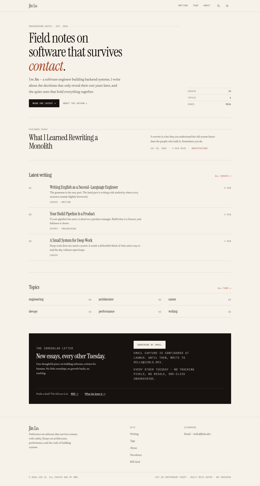
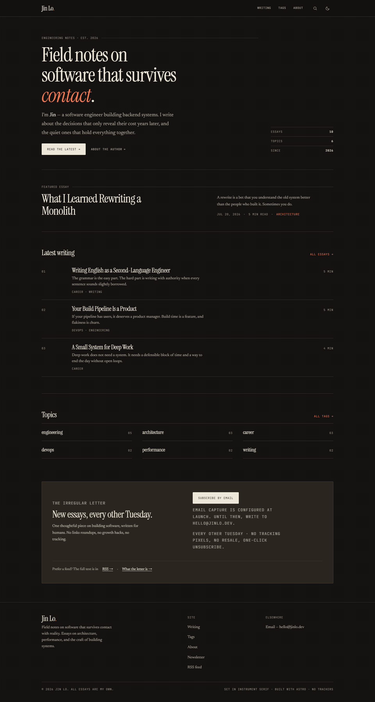
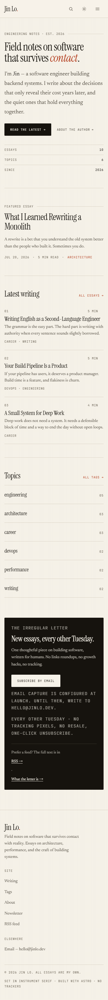
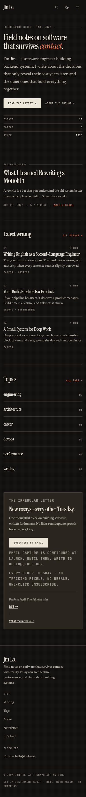
/blog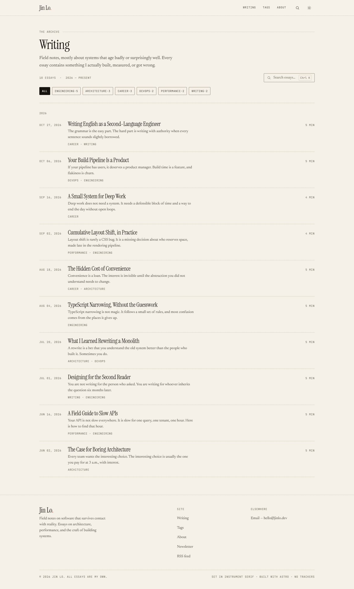
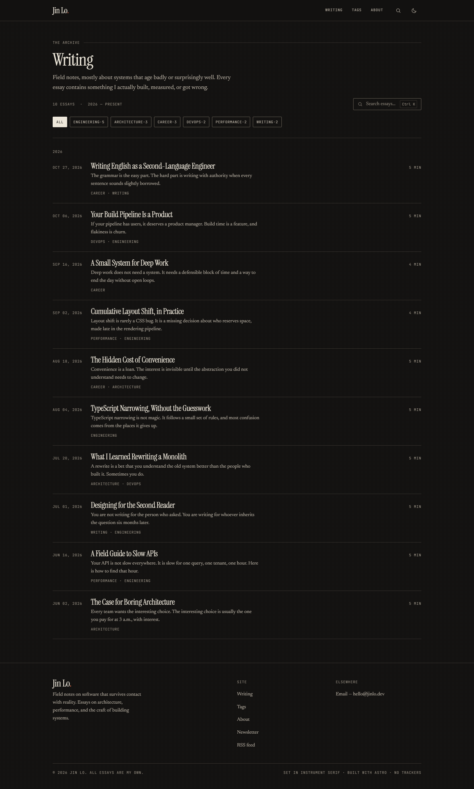
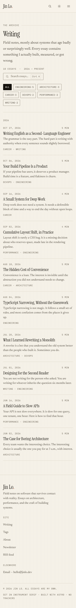
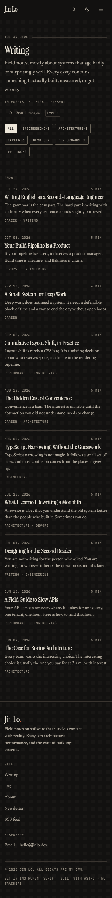
/blog/typescript-narrowing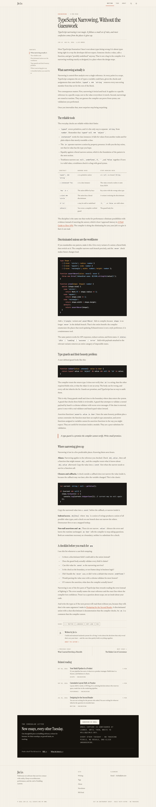
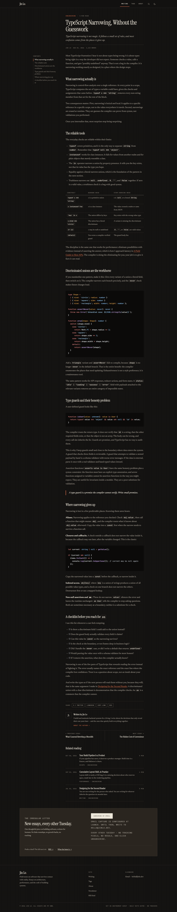
/about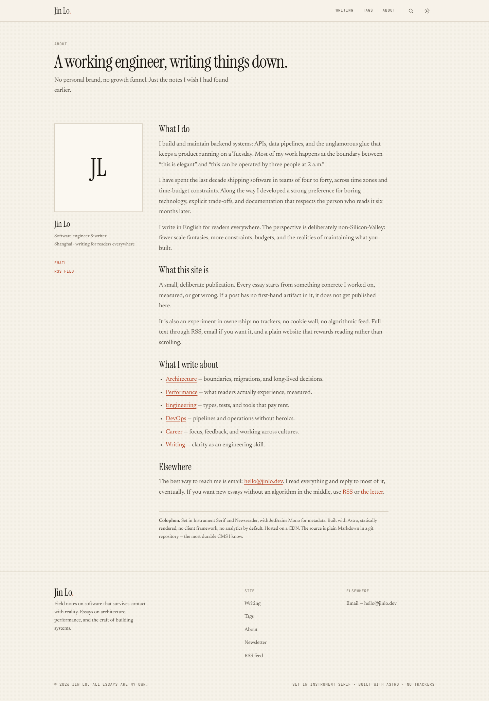
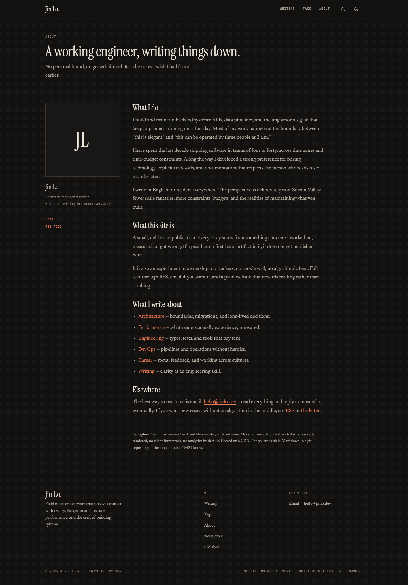
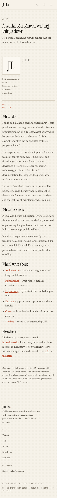
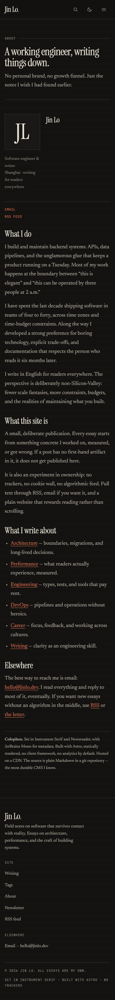
/newsletter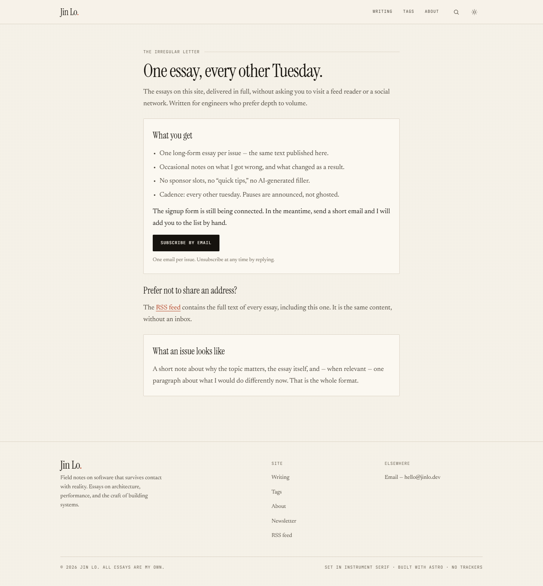
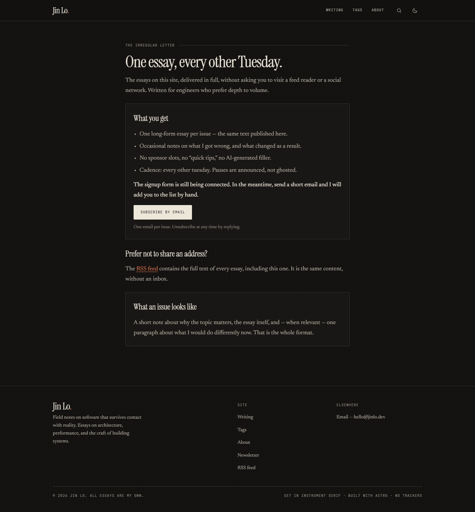
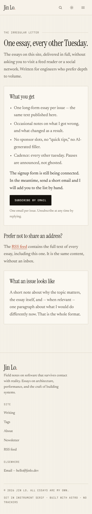
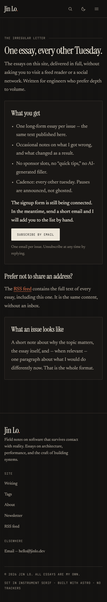